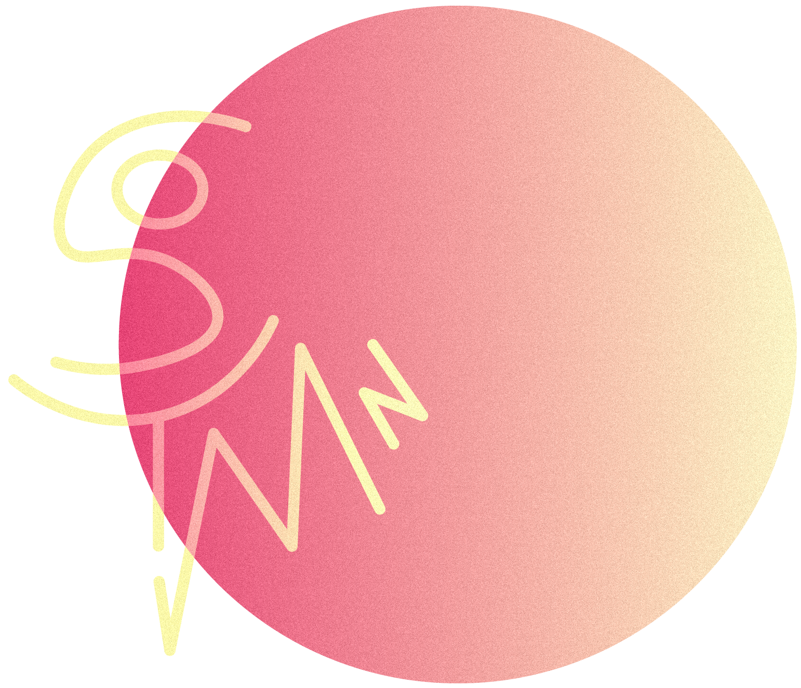

syrine mnasri
Spécialisée dans le design graphique des médias imprimés, j'ai élargi mon potentiel créatif à travers le digital par l'intégration web, la gestion des réseaux sociaux et le référencement SEO.
Spécialisée dans le design graphique des médias imprimés, j'ai élargi mon potentiel créatif à travers le digital par l'intégration web, la gestion des réseaux sociaux et le référencement SEO.